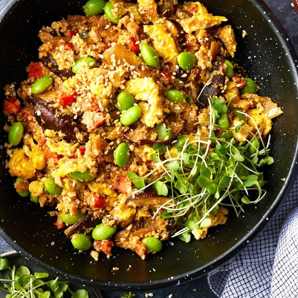
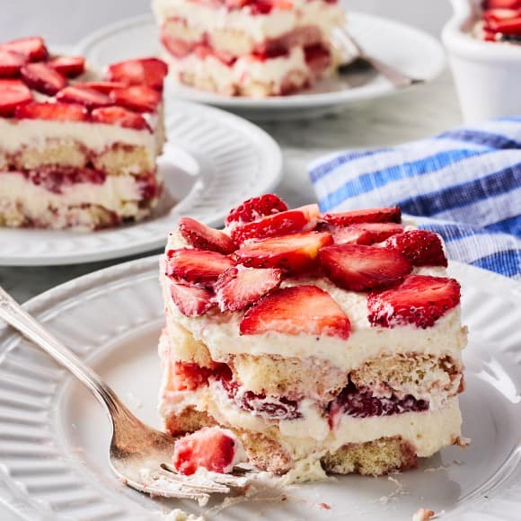

Table of contents
Must Have Cookbook Recipies
Shakshuka: Breakfast
Prep Time : 10 Minutes
Cook Time : 25 Minutes
Total Time : 35 Minutes
Serves 4
Wanna go back to the top?
About the dish
Shakshuka is a classic North African and Middle Eastern
breakfast dish. This recipe is simple and satisfying,
featuring eggs poached in a bell pepper and tomato sauce.
Serve it with pita or crusty bread for breakfast or brunch...or
dinner! Shakshuka is a delicious option for any meal.
Ingredients
- 2 tablespoons extra-virgin olive oil
- 1 cup chopped yellow onion
- 1 red bell pepper, stemmed, seeded, and diced
- ¼ teaspoon sea salt, plus more to taste
- Freshly ground black pepper
- 3 garlic cloves, minced
- ½ teaspoon smoked paprika
- ½ teaspoon ground cumin
- Pinch cayenne pepper, optional
- 1 (28-ounce) can crushed tomatoes
- 2 tablespoons harissa paste
- 1 cup fresh spinach, chopped
- 3 to 5 large eggs
- ⅓ cup crumbled feta cheese
- ¼ cup fresh parsley leaves
- 1 avocado, sliced
- Microgreens, for garnish, optional
- Toasted bread, for serving
Instructions
-
Heat the oil over medium heat in a 12-inch lidded
stainless steel or enamel-coated cast-iron skillet.
Add the onion, red pepper, salt, and several grinds
of fresh pepper and cook until the onion is soft and
translucent, 6 to 8 minutes.
-
Reduce the heat to medium-low and add the garlic,
paprika, cumin, and cayenne, if using. Stir and
let cook for about 30 seconds, then add the tomatoes
and harissa paste. Simmer for 15 minutes until the
sauce is thickened.
-
Add the spinach and stir until wilted. Use the back of a spoon
to make 3 to 5 wells in the sauce. Crack in the eggs.
Cover and cook until the eggs are set, 5 to 8 minutes.
The timing will depend on how runny you like your egg yolks.
-
Season with salt and pepper to taste and sprinkle
with the feta, parsley, avocado, and microgreens,
if using. Serve with toasted bread for scooping.
Cauliflower Fried Rice
Prep Time : 20 Minutes
Cook Time : 10 Minutes
Total Time : 30 Minutes

Serves 4
Wanna go back to the top?
About the dish
This cauliflower fried rice recipe is a vegetarian,
gluten-free, and low-carb main or side dish that everyone
will love! Kimchi, shiitake mushrooms, tamari, and sesame
oil pack it with tangy, savory, nutty flavor.
Ingredients
- 2 tablespoons rice vinegar
- 2 tablespoons tamari
- 2 teaspoons toasted sesame oil
- 2 teaspoons avocado oil
- 8 ounces shiitake mushrooms, stemmed and sliced
- 1 large carrot, diced
- ¼ teaspoon sea salt
- 2 garlic cloves, chopped
- 1 tablespoon chopped fresh ginger
- ¼ cup chopped kimchi
- 1 small head of cauliflower, riced
- 1 bunch scallions, chopped
- 2 eggs, beaten
- ½ cup frozen edamame
- 1½ teaspoons fresh lime juice
- Fried eggs, for topping, optional
- Sesame seeds, for garnish
- Microgreens, for garnish
- Sriracha, for serving
Instructions
-
In a small bowl, mix together the rice
vinegar, tamari, and sesame oil. Set aside.
-
Heat the avocado oil in a large nonstick skillet
over medium heat. Add the mushrooms,
carrot, and salt and cook, stirring
occasionally, for 8 minutes, or until softened.
-
Stir in the garlic, ginger, and kimchi,
then add the cauliflower rice and
scallions and stir to combine.
Make a well in the center of the
pan and pour in the eggs. Stir to scramble,
then mix the scrambled eggs into the fried rice.
-
Add the tamari mixture and the edamame and
cook until the edamame is heated through.
Turn off the heat, stir in the lime juice,
and season to taste.
-
Portion the cauliflower fried rice onto plates
and top with fried eggs, if desired. Garnish
with sesame seeds and microgreens and serve
with sriracha on the side.
Strawberry Tiramisu
Prep Time : 45 Minutes
Cook Time : 15 Minutes
Chilling Time : 8 hours
Total Time : 9 hours

Serves 9
Wanna go back to the top?
About the dish
This strawberry tiramisu is a delicious
no-bake summer dessert! Fresh strawberries
and a homemade strawberry syrup pack it with
sweet and tangy strawberry flavor. Heads up:
This recipe needs to chill for at least 8 hours
before serving! Make sure to plan ahead when you
want to try it.
Ingredients
- 1½ pounds fresh strawberries, hulled
- 2 tablespoons cane sugar
- 1 teaspoon balsamic vinegar
- Pinch sea salt
- ½ cup water
- 8 ounces mascarpone cheese, at room temperature
- ½ teaspoon vanilla extract
- 1 cup heavy whipping cream
- ½ cup powdered sugar, sifted if lumpy
-
24 to 30 DeLallo Savoiardi ladyfingers, exact number will
depend on your baking dish
Instructions
-
Thinly slice half the strawberries and set aside.
Dice the remaining strawberries and place in a
medium saucepan. Add the sugar, balsamic vinegar,
and salt and place over medium heat. Cook, stirring,
until the sugar dissolves. Cover the pan and simmer,
stirring occasionally and reducing the heat as needed,
for 10 minutes, or until the strawberries cook down into
a juicy sauce.
-
Set a fine mesh strainer over a medium heatproof bowl.
Pass the strawberry sauce through the strainer to
remove the solids. Set the solids aside for assembling
the tiramisu. Add the water to the juices in the bowl
and stir to combine. Chill in the refrigerator until
ready to assemble the tiramisu.
-
In a large bowl, mix together the mascarpone and vanilla
extract.
-
In another large bowl, use an electric mixer or stand
mixer to beat the cream and powdered sugar on medium
speed for 5 to 8 minutes, or until soft to medium peaks
form. Gradually and gently fold the whipped cream into
the mascarpone, mixing until just combined.
-
Assemble the tiramisu. Dip half the ladyfingers into
the strawberry syrup one at a time, leaving each one
in the liquid just long enough to coat it on all sides.
Arrange the dipped ladyfingers evenly at the bottom of a
9x9-inch or similar baking dish, cutting them if necessary
to fully cover the bottom.
-
Spread half the mascarpone mixture evenly on top,
then evenly dot the reserved cooked strawberry solids
on top of the mascarpone. Top with half the sliced
strawberries.
-
Dip the remaining ladyfingers into the strawberry syrup
one at a time, placing them in an even layer on top of
the sliced strawberries. Top with the remaining mascarpone
mixture and remaining sliced strawberries.
-
Cover and chill in the refrigerator for at least 8 hours or
overnight before slicing and serving.
Wanna go back to the top?